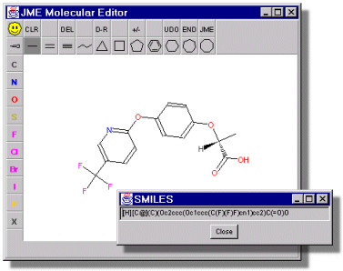
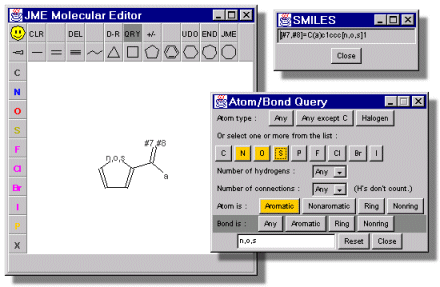
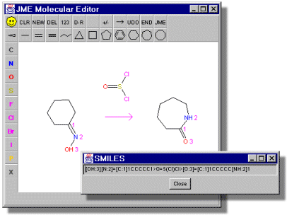
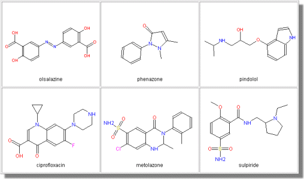

JME Molecular Editor © is a Java program which allows to draw, edit, and display molecules and reactions in a stand-alone mode or as an applet directly within an HTML page. The Editor can generate SMILES of created structure, so it can be used as a front-end to molecular and reaction databases or property calculation services.
|  | Easy creation and editing of molecules including stereochemistry. Generation of SMILES. |
| Creation of substructure queries. Generation of SMARTS. |  |
|  | Creation of reactions, possible also with atom mapping. Generation of reaction SMILES or SMIRKS. |
| The applet may be used also in a depiction mode (without editing buttons), to visualise molecules. Internal JME format or MDL mol files may be processed. |  |
Despite its features, the JME editor is relatively small (37 kB) what assures fast loading. Since the program is written in Java1.0, it is compatible with all common web browsers.
For non-commercial use the JME editor is available free of charge directly from peter.ertl[at]novartis.com.